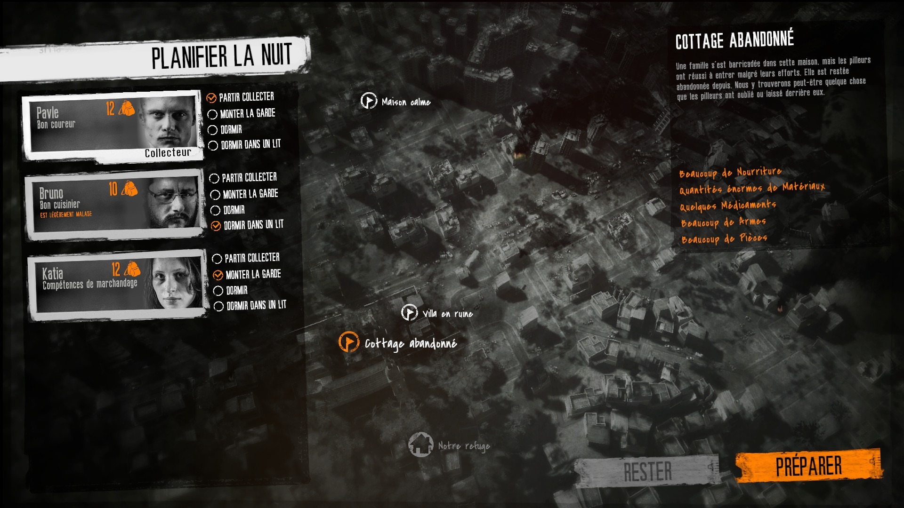

Une fois la nuit arrivée, le jeu va vous montrer une carte

Vous aurez alors le choix: monter la garde, dormir ou sortir collecter
Un seul survivant peut sortir collecter
En cliquant sur l'un des lieux possibles, cela vous affichera ce que vous pouvez récoltez et les quantités, allant de "quelques" pour les quantités les plus faibles, à "énormes quantités" pour les plus grandes
Mais ce n'est pas tout: cela vous dira s'il est possible d'échanger avec des survivants sur place ou si il y a des survivants (possiblement) dangereux sur place
Avant de foncer tête baissé, regardez bien les ressources qui y sont présentes en fonction de vos besoins et observez bien les survivants avant de vous en approcher: vous ne pouvez faire confiance à personne la nuit
À côté de la photo il y a un sac et un nombre: c'est le nombre d'objet (ou de paquet d'objets) que le survivant peut transporter lors d'une collecte. Choisissez bien le survivant que vous envoyé
Comme il y a des personnes malveillantes à certains endroits ou des obstacles (comme des portes, armoires fermées à clé ou encore des piles de détritus), vous pouvez donner des outils ou des armes à votre survivant
Ainsi, votre survivant pourra se défendre, forcer les portes ou dégager les décombres avec ces outiles. Mais attention à ne pas le surcharger d'outils: chaque outils prend une place à la place des objets que vous veniez chercher
Voilà! C'est tout pour cette petite découverte découverte du jeu This war of mine. Le reste, je vous laisse le découvrir par vous même!